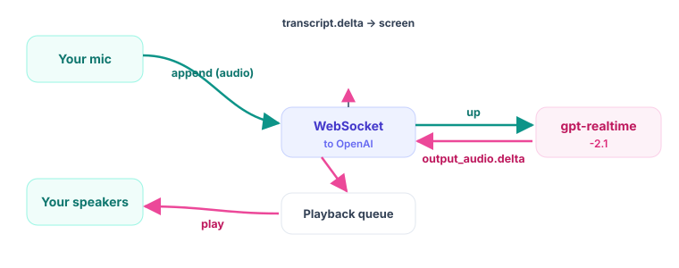
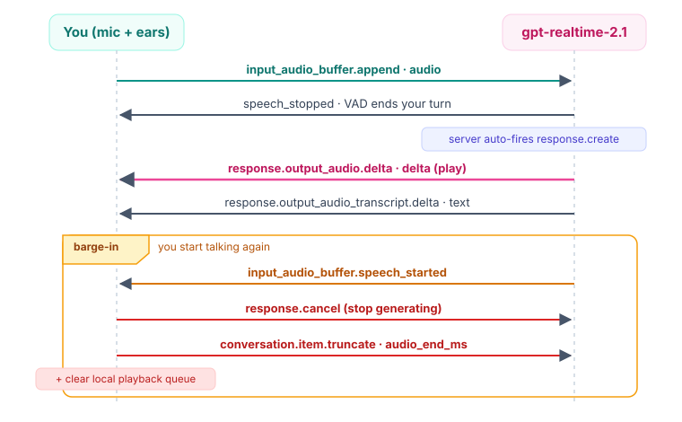

Voice Agents · Module 05
Full-duplex speech-to-speech with gpt-realtime-2.1
The one idea
One model, gpt-realtime-2.1, takes your raw audio and returns its raw audio. Fewer steps means low enough latency to feel real.
The map
| Concept | What it does | When it matters |
|---|---|---|
| gpt-realtime-2.1 | Speech-to-speech: audio in, audio out | Model + session type |
| Full duplex | Mic up while voice down, at once | Two audio streams together |
| Semantic VAD | Server decides turn end, auto-replies | turn_detection |
| output_audio.delta | Assistant voice, base64 in delta | Playing the reply |
| transcript.delta | Text of what it is saying | Live captions |
| Barge-in | Stop playback when user cuts in | Natural interruption |
| item.truncate | Forget audio you never heard | Honest memory |
Server-side first (a Python CLI), so the assistant logic is isolated before the browser (Module 07).
The four moving parts

Four things run at once, each on its own thread: the WebSocket, the mic stream, the speaker stream, and the message loop.
Why one model
gpt-realtime-mini or gpt-4o-realtime-preview.Configure once
session.update sets everything{ "type": "session.update",
"session": {
"type": "realtime",
"instructions": "You are a concise voice assistant...",
"reasoning": { "effort": "low" },
"audio": {
"input": { "format": {"type":"audio/pcm","rate":24000},
"turn_detection": {"type":"semantic_vad"} },
"output": { "format": {"type":"audio/pcm","rate":24000},
"voice": "marin" } } } }session.audio.input/output. The flat input_audio_format: "pcm16" is legacy and silently fails. Voice is chosen once and cannot change mid-session.Both streams, together
with sd.RawInputStream( # the microphone
samplerate=24000, blocksize=1200, # ~50 ms chunks
dtype="int16", channels=1, # PCM16 mono
callback=mic_callback,
), sd.RawOutputStream( # the speakers
samplerate=24000, blocksize=1200,
dtype="int16", channels=1,
callback=speaker_callback,
):
ws_app.run_forever() # pump the WebSocket until Ctrl+CWho ends the turn?
| Mode | Ends the turn | Asks for a reply |
|---|---|---|
| semantic_vad | Server, when the sentence sounds done | Server, automatically |
| server_vad | Server, after a short silence | Server, automatically |
| null (manual) | You: input_audio_buffer.commit | You: response.create |
response.create, so we never send it. Send commit + response.create yourself only in manual mode (push_to_talk.py), or you fight the detector.The #1 gotcha
if etype == "response.output_audio.delta":
pcm = base64.b64decode(event["delta"]) # bytes in "delta"
enqueue_audio(pcm) # speaker plays it
elif etype == "response.output_audio_transcript.delta":
sys.stdout.write(event.get("delta", "")) # live captions
sys.stdout.flush()response.audio.delta. The wrong guess looks right, fires never, and the only symptom is silence. Bytes are in delta (the audio field is only for what you send up).Interrupt it

Barge-in in three moves
if etype == "input_audio_buffer.speech_started":
if assistant_speaking:
send_event({"type": "response.cancel"}) # (a) stop generating
clear_playback() # (b) silence now
send_event({ # (c) forget the tail
"type": "conversation.item.truncate",
"item_id": current_item_id,
"content_index": 0,
"audio_end_ms": played_ms}) # what you actually heardWithout (c), the server thinks it said the whole answer. Its memory would include words you cut off, and its next reply could reference them.
conversation.item.truncate. Browser WebRTC (Module 07) uses output_audio_buffer.clear. Same idea, different transport.On the way up
audio, not deltadef mic_callback(indata, frames, time_info, status):
if ws_app is None or not session_ready:
return # do not send before session.update
b64 = base64.b64encode(bytes(indata)).decode("ascii")
send_event({"type": "input_audio_buffer.append",
"audio": b64}) # field is "audio" INBOUNDWe keep sending the mic even while the assistant talks, on purpose: that is how the server hears you begin to interrupt.
audio field; delta is only for streams coming down. The session_ready gate stops the mic racing ahead of your config.Run it
cp ../.env.example ../.env # paste your OpenAI key (paid tier)
uv sync # install websocket-client, sounddevice, numpy, dotenv
uv run python src/voice_assistant.py # just talk; Ctrl+C to quit
# bonus: manual turns (push-to-talk), ENTER sends each phrase
uv run python src/push_to_talk.pySHOW_MIC_METER = True to watch audio as numbers.What you learned
gpt-realtime-2.1: audio in, audio out, low latency.semantic_vad; voice marin chosen once.output_audio.delta (voice) + ...transcript.delta (text).delta), not response.audio.delta. VAD auto-fires the reply. Barge-in = cancel + clear + conversation.item.truncate. WebRTC uses output_audio_buffer.clear instead.The one idea to remember
response.create unless you turn VAD off.truncate to what you actually heard.
Next: Module 06 mints ek_ tokens so a browser can use this safely. 🎤